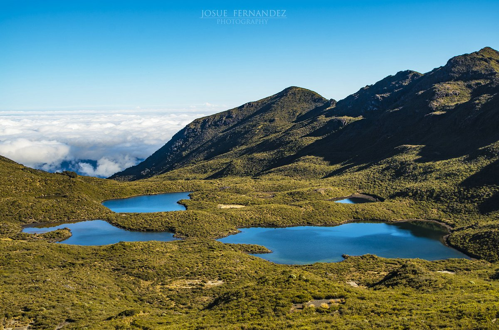
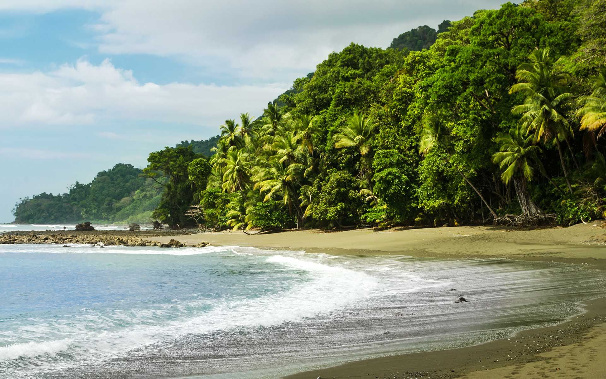
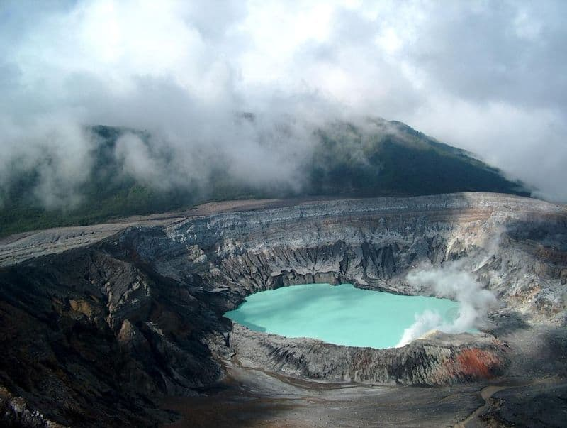
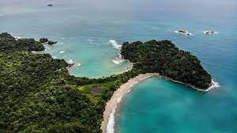
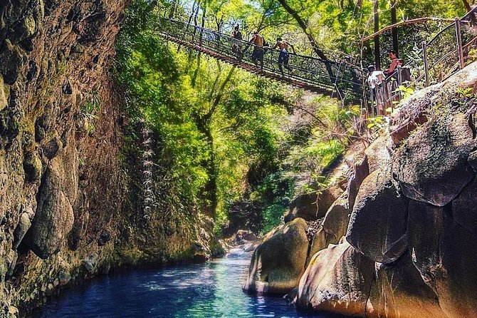

¿Quiénes Somos?
Bienvenidos a nuestra página informativa dedicada a la flora y fauna de Costa Rica y su fascinante biodiversidad dentro de los Parques Nacionales.
Nuestro objetivo es brindarte un recorrido completo por estos tesoros naturales para que puedas explorar y apreciar la riqueza de la vida silvestre que albergan.
Este sitio web ofrece información relevante y precisa sobre los Parques Nacionales, incluyendo horarios, costos de entrada, ubicación y enlaces a sus sitios web oficiales.
Nuestro objetivo es proporcionarte una fuente confiable y práctica para planificar tu visita a estos parques. Te ofrecemos horarios actualizados, tarifas de entrada,
ubicaciones precisas y enlaces directos a los sitios web oficiales para obtener información adicional.
|  |
Parque Nacional Chirripó |
|  |
Parque Nacional Corcovado |
|  |
Parque Nacional Volcán Poás |
|  |
Parque Nacional Manuel Antonio |
|  |
Parque Nacional Rincón de la Vieja |